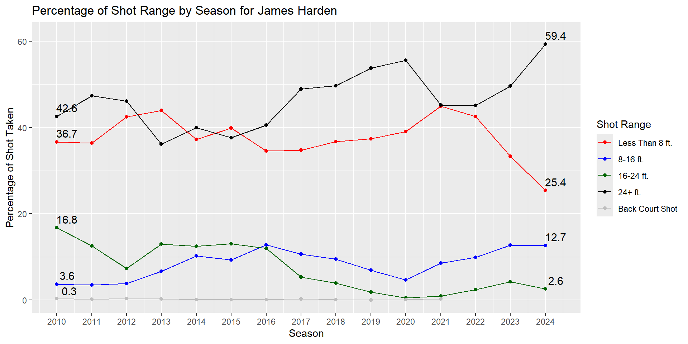

The following objects are masked from 'package:stats':
filter, lag
The following objects are masked from 'package:base':
intersect, setdiff, setequal, union
library(hoopR)library(ggplot2)library(ggrepel)
Warning: package 'ggrepel' was built under R version 4.4.1
Data Read in and Manipulation.
Many thanks to https://github.com/DomSamangy for uploading the past 20 seasons of NBA Chart data. This would not be possible without him due to my loops not working. On his github there are many resources for sports analytics, so make sure to check all of the links.
I also wish to thank the HoopR Package in R for access to the NBA API and other basketball data functions as well.
FullShotData <-read.csv("D:/GradSchool/Personal Projects/Basketball/NBA/Writeups/ShotTypeWriteup/ShotsBySeason/NBA_2004_2024_Shots.csv")#Relevel and transform data for laterFullShotData <- FullShotData %>%mutate(ZONE_RANGE =factor(ZONE_RANGE, levels =c("Less Than 8 ft.","8-16 ft.","16-24 ft.","24+ ft.","Back Court Shot")))FullShotData <- FullShotData %>%mutate(BASIC_ZONE =factor(BASIC_ZONE, levels =c("Restricted Area","In The Paint (Non-RA)","Mid-Range","Above the Break 3","Right Corner 3","Left Corner 3","Backcourt")))FullShotData <- FullShotData %>%mutate(SimplifiedZone =case_when( BASIC_ZONE %in%c("Right Corner 3", "Left Corner 3", "Above the Break 3") ~"3 Point Shot",TRUE~ BASIC_ZONE ) )FullShotData <- FullShotData %>%mutate(SimplifiedZone2 =case_when( BASIC_ZONE %in%c("Right Corner 3", "Left Corner 3") ~"Corner 3Point Shot",TRUE~ BASIC_ZONE ) )FullShotData <- FullShotData %>%mutate(SimplifiedZone =factor(SimplifiedZone, levels =c("Restricted Area","In The Paint (Non-RA)","Mid-Range","3 Point Shot","Backcourt")))FullShotData <- FullShotData %>%mutate(SimplifiedZone2 =factor(SimplifiedZone2, levels =c("Restricted Area","In The Paint (Non-RA)","Mid-Range","Above the Break 3","Corner 3Point Shot","Backcourt")))
Goal
The goal of this analysis is to see how the shot types have changed in the NBA over the years. Patrick Beverly, in some interview before, stated that the NBA scouts are looking for 3 different shots players can make, 3 pointers, layups, and free throws. This made me want to investigate how the shot when teams were taking more threes, and how the players adapted between eras.
Shots by Season
First thing is to look at our original goal, how did the shots change over the season. With the data we have, we have all shots taken in the last 20 years to check how shots have been taken in the timeframe.
We will have some things we want to account for and one of these would be the position of the player. This is important because it can affect the interpretation of the data. In the earlier years of the NBA when the 3 pointer was not as prevalent, big-men would not be seen on the 3 point line so we would want to account for them for not being on the 3 point line.
This is just one example of something we want to account for, but we will be able to categorize the players in many different ways. Grouping things by Season, Position, their teams, etc. For this, we will mainly be looking at Season and Position along with some notable players to see how things changed over time.
Our first goal is to look at how 2 point and 3 point shot shots have changed over time. In this graph we will be looking at a line graph of the percentage of shots taken per season.
#Shot types by seasonSummarizedSeasonShots <- FullShotData %>%group_by(SEASON_1, SHOT_TYPE) %>%summarise(TotalShots =n(), .groups ='drop') %>%group_by(SEASON_1) %>%mutate(SeasonTotalAttempts =sum(TotalShots), ShotTypePercentage = (TotalShots / SeasonTotalAttempts) *100 ) %>%ungroup()ggplot(data = SummarizedSeasonShots, aes(x = SEASON_1, y = ShotTypePercentage, color = SHOT_TYPE)) +geom_line() +geom_point() +labs(x ="Season", y ="Percentage of Shot Taken", title ="Percentage of Shot Taken by Season", color ="Shot Type") +annotate("segment", x =2010, y =20, yend =80, color ="blue", linewidth = .5) +annotate("text", x =2014.5, y =50, label ="Stephen Curry Drafted", size =4)
The first three point revolution in the NBA most likely started between 2004 and 2008 credited to the “7 seconds or less Phoenix Suns” which shows an increase of 3 pointers in that time period. After 2007, Stephen Curry was drafted to the Warriors and another increase follows. It is good to note at the time he was drafted for a reference. He was drafted in 2009, which translated to being labeled as the “2010” season. After 2012 the three pointer picks up up to today where it started to flatten out. This data does not have the current seasons data, 2024 to 2025, but this can be updated with that shot data at the end of the year.
Splitting up the two pointer will be better to see how far the shot is being taken. 22-24 feet is the range for the three pointer, but the 2 pointer has 21 feet and 11 inches of range to analyze from. To get deeper analysis, we will be looking at 8 feet groups from the basket ending at 24+ foot shots.
SummarizedSeasonShotsRange <- FullShotData %>%group_by(SEASON_1, ZONE_RANGE) %>%summarise(TotalShots =n(), .groups ='drop') %>%group_by(SEASON_1) %>%mutate(SeasonTotalAttempts =sum(TotalShots), ShotTypePercentage = (TotalShots / SeasonTotalAttempts) *100 ) %>%ungroup()ggplot(data = SummarizedSeasonShotsRange, aes(x = SEASON_1, y = ShotTypePercentage, color = ZONE_RANGE)) +geom_line() +geom_point() +scale_color_manual(values =c("red","blue","darkgreen","black","gray")) +labs(x ="Season", y ="Percentage of Shot Taken", title ="Percentage of Shot Range by Season", color ="Shot Range")
The long mid range shot of 16-24 feet was the second most preferred shot after shots 8 feet or closer to the rim but have been traded in favor of the three point shot. The shot preference changes at 2011 and increases from there up to today where 8 feet shots and three point shots are almost equal in preference. Shots less than 8 feet and 8 to 16 feet are still relatively unchanged.
Teams most likely learned around this time that the percentages of the shots were close, but the three point shot gave 1.5 times the points for the same percentage so they changed their schemes. A video from thinking basketball also states that spreading the floor also gives teams higher percentages for driving. Lots of moving parts for how the three pointer improved the overall offenses of the NBA, but we will only look at the shots and how they changed.
The next thing to look at would be where the shots less than 8 feet are taken. We have data for Restricted Area shots, Non Restricted Area shots, and other categories of shots. In the original data, they separated 3 point shots into Left and Right corner, and above the break. For this, we combined the 3 point shots to extend the ranged shot idea from above, but now we have extending zones for the shots.
SummarizedSeasonShotsSimplifiedRange <- FullShotData %>%group_by(SEASON_1, SimplifiedZone) %>%summarise(TotalShots =n(), .groups ='drop') %>%group_by(SEASON_1) %>%mutate(SeasonTotalAttempts =sum(TotalShots), ShotTypePercentage = (TotalShots / SeasonTotalAttempts) *100 ) %>%ungroup()ggplot(data = SummarizedSeasonShotsSimplifiedRange, aes(x = SEASON_1, y = ShotTypePercentage, color = SimplifiedZone)) +geom_line() +geom_point() +scale_color_manual(values =c("red","blue","darkgreen","black","gray")) +labs(x ="Season", y ="Percentage of Shot Taken", title ="Percentage of Shot Zone by Season", color ="Shot Zone")
As the groups change to zones of the floor rather than specific distances from the basket, we can see the similar pattern of the three point shot taking the place of the mid range, however this takes place in 2015 rather than 2010. Splitting up less than 8 foot shots, we see that restricted area decreases while non restricted area shots increase by around 5%. We will now separate the 3 point shot into corner and above the break threes to see how those 3 point types of changed over time.
SummarizedSeasonShotsBasicRange <- FullShotData %>%group_by(SEASON_1, SimplifiedZone2) %>%summarise(TotalShots =n(), .groups ='drop') %>%group_by(SEASON_1) %>%mutate(SeasonTotalAttempts =sum(TotalShots), ShotTypePercentage = (TotalShots / SeasonTotalAttempts) *100 ) %>%ungroup()ggplot(data = SummarizedSeasonShotsBasicRange, aes(x = SEASON_1, y = ShotTypePercentage, color = SimplifiedZone2)) +geom_line() +geom_point() +scale_color_manual(values =c("black","red","darkgreen","purple","blue","gray")) +labs(x ="Season", y ="Percentage of Shot Taken", title ="Percentage of Shot Zone by Season", color ="Shot Zone")
Breaking up the three point shots, the corner three pointer only saw a slight increase of 5% while the above the break 3 pointer has an increase of close to 15%. The mid range has dropped close to 25% as well with a slight increase of 5% for the non restricted paint shots.
Positional Shot Change
Earlier we mentioned how it would be important to separate different position types to see how their shots evolved. In the following graph, Positions are separated (Positions were given in the data in G,F,C format) and it is possible to see how their shots changed over time.
PositionalShotRangeSummary <- FullShotData %>%na.omit() %>%group_by(SEASON_1, ZONE_RANGE, POSITION_GROUP) %>%summarise(TotalShots =n(), .groups ='drop' ) %>%group_by(SEASON_1, POSITION_GROUP) %>%mutate(PositionTotalAttempts =sum(TotalShots), ShotTypePercentage = (TotalShots / PositionTotalAttempts) *100 ) %>%ungroup()ggplot(data = PositionalShotRangeSummary, aes(x = SEASON_1, y = ShotTypePercentage, color = ZONE_RANGE)) +geom_line() +geom_point() +scale_color_manual(values =c("red","blue","darkgreen","black","gray")) +facet_grid(cols =vars(POSITION_GROUP)) +labs(x ="Season", y ="Percentage of Shot Taken", title ="Percentage of Shot Range by Season", color ="Shot Range")
With this breaking down the positions, the mid range died for every position. 3 point shots went up for every position, but shots less than 8 feet have remained stable.
Guards have been increasing their 3 point shots over this entire span, forwards started to increase their three pointer over time but increased much more around 2012, and centers caught on at 2015.
All positions, though at different percentages, are looking to shoot the ball less than 8 feet, or above 24 feet showing the full effect of the three point revolution. Overall, the shots between 8 to 24 feet of the basket are less preferred, 16-24 feet decreasing the msot over time.
Next graph will be the last for positions looks at the specifics of Restricted Area, non restricted, mid range, and above the break three with the corner three.
PositionalShotZoneSummary <- FullShotData %>%na.omit() %>%group_by(SEASON_1, SimplifiedZone2,POSITION_GROUP) %>%summarise(TotalShots =n(), .groups ='drop') %>%group_by(SEASON_1, POSITION_GROUP) %>%# Group by season and position groupmutate(PositionTotalAttempts =sum(TotalShots), # Total attempts for each position group in a seasonShotTypePercentage = (TotalShots / PositionTotalAttempts) *100# Percentage of shots within the position group ) %>%ungroup()ggplot(data = PositionalShotZoneSummary, aes(x = SEASON_1, y = ShotTypePercentage, color = SimplifiedZone2)) +geom_line() +geom_point() +scale_color_manual(values =c("black","red","darkgreen","purple","blue","gray")) +facet_grid(cols =vars(POSITION_GROUP)) +labs(x ="Season", y ="Percentage of Shot Taken", title ="Percentage of Shot Zone by Season", color ="Shot Zone")
The same ideas are show with the mid range decreasing, while 3 point shots and less than 8 feet shots are preferred.
Now with all of these graphs seeing how positions changed over time, lets look at some stars who were playing during these times and how their shots changed.
#Function to pull names easilyPlayerShotRangeProfile <-function(Player){ PlayerShotData <- FullShotData %>%filter(PLAYER_NAME == Player) %>%group_by(SEASON_1, ZONE_RANGE) %>%summarise(TotalShots =n(), .groups ='drop') %>%group_by(SEASON_1) %>%mutate(SeasonTotalAttempts =sum(TotalShots), ShotTypePercentage = (TotalShots / SeasonTotalAttempts) *100 ) %>%ungroup() FirstSeason <-min(PlayerShotData$SEASON_1)LastSeason <-max(PlayerShotData$SEASON_1)# Filter for first and last seasons to add labelsLabelData <- PlayerShotData %>%filter(SEASON_1 %in%c(FirstSeason, LastSeason))ggplot(data = PlayerShotData, aes(x = SEASON_1, y = ShotTypePercentage, color = ZONE_RANGE)) +geom_line() +geom_point() +scale_color_manual(values =c("red","blue","darkgreen","black","gray")) +labs(x ="Season", y ="Percentage of Shot Taken", title =paste("Percentage of Shot Range by Season for", Player), color ="Shot Range") +scale_x_continuous(breaks =unique(PlayerShotData$SEASON_1)) +geom_text_repel(data = LabelData,aes(label =round(ShotTypePercentage, 1)),size =4,color ="black",nudge_x = .3,nudge_y =2,segment.color ="grey50", # Draw lines connecting labels to pointsmax.overlaps =Inf# Allow all labels to be displayed )}PlayerShotZoneProfile <-function(Player){ PlayerShotData <- FullShotData %>%filter(PLAYER_NAME == Player) %>%group_by(SEASON_1, SimplifiedZone) %>%summarise(TotalShots =n(), .groups ='drop') %>%group_by(SEASON_1) %>%mutate(SeasonTotalAttempts =sum(TotalShots), ShotTypePercentage = (TotalShots / SeasonTotalAttempts) *100 ) %>%ungroup() FirstSeason <-min(PlayerShotData$SEASON_1)LastSeason <-max(PlayerShotData$SEASON_1)# Filter for first and last seasons to add labelsLabelData <- PlayerShotData %>%filter(SEASON_1 %in%c(FirstSeason, LastSeason))ggplot(data = PlayerShotData, aes(x = SEASON_1, y = ShotTypePercentage, color = SimplifiedZone)) +geom_line() +geom_point() +scale_color_manual(values =c("red","blue","darkgreen","black","gray")) +labs(x ="Season", y ="Percentage of Shot Taken", title =paste("Percentage of Shot Zone by Season for", Player), color ="Shot Zone") +scale_x_continuous(breaks =unique(PlayerShotData$SEASON_1)) +geom_text_repel(data = LabelData,aes(label =round(ShotTypePercentage, 1)), # Add percentages as labelssize =4,color ="black",nudge_x = .3, # Additional manual nudging (optional)nudge_y =2,segment.color ="grey50", # Draw lines connecting labels to pointsmax.overlaps =Inf# Allow all labels to be displayed )}
Player Shot Profiles
The rest of the graphs will look at popular players to see how the have evolved with the NBA changing their shots.
For this document, I have chosen to look at Lebron James, Kevin Durant, Al Horford, Chris Paul, Stephen Curry, and James Harden respectively as they are names that have been in the league for a long while and play different positions.
PlayerShotRangeProfile("LeBron James")
PlayerShotZoneProfile("LeBron James")
LeBron has changed quite a bit over the years. He still primarily takes most of his shots within 8 feet of the rim, but he has increased his 3 point shot drastically.
PlayerShotRangeProfile("Kevin Durant")
PlayerShotZoneProfile("Kevin Durant")
Kevin Durant has one of the more interesting evolution of his shot. His Less than 8 ft shot along with his 16-24 ft shot have completely reversed with his 8-16 ft shot and 3 pointer. His mid range is still strong, but a much shorter mid range than what he used to shoot.
PlayerShotRangeProfile("Al Horford")
PlayerShotZoneProfile("Al Horford")
Going into a more interesting case are the centers. Al Horford has been in the league for a very long time and we can see in after 2015 he really started taking threes while both mid range shots have decreased. Now he favors threes more than any shot and the next option is less than 8 feet to the rim.
PlayerShotRangeProfile("Chris Paul")
PlayerShotZoneProfile("Chris Paul")
Chris Paul’s shots show that a player must play to their strengths. At the time of writing this he has played for 19 years and is around 6’1. As a younger player he may have been able to work in the paint, but now he is seen primarily taking longer range shots and not close to the paint. He and Kevin Durant still prefer short mid range shots over layups.
PlayerShotRangeProfile("Stephen Curry")
PlayerShotZoneProfile("Stephen Curry")
Stephen Curry, the three point legend, began his career taking more mid range shots than threes. As time progressed he did end up where we all expected him to be for his percentages.
PlayerShotRangeProfile("James Harden")

PlayerShotZoneProfile("James Harden")
Another very influential figure for three pointers and an unstoppable player in his prime who had all the tools. Early on he did prefer the three over all other shots but balanced out his shots in the middle of his career and is very prolific three point shooter now.
For fun, I wanted to see which players had a very balanced shot profile for simplified zones (excluding back court heaves, they show up in the graphs but not in the calculation). Though there are many players who played less than normal and may have very varied shot types, I will take names of more notable players and show their graphs.
Players I wished to include have been in the league for around 5 years and are popular. Players are listen from least amount of variance to greater variance.
Jalen Brunson, Joel Embiid, Kawhi Leonard, Devin Booker, Kyrie Irving.
Younger players who have similar shot graphs are Paolo Banchero and Cade Cunningham which is interesting as they both play very different positions. One thing to note as these players are the all star players, having a balanced shot selection may be very beneficial to their success.
After this I wanted to see those who had the least balanced shot selection.
I chose DeAndre Jordan, Rudy Gobert, and Tyson Chandler for these as they are notable names with long careers with very high variance.
Overall, shots in the NBA have changed over the last 20 years. 20 years ago teams layups were still the most common shot, but mid range shots overall were favored more than the 3 point shot. 3 point shots nowadays are taken close to as much as layups while mid range shots are now at the bottom of preferred shots.
The three point shot was trending upwards, but after Stephen Curry entered the league it become much more prominent.
All positions in the NBA have changed their shots as well replacing mid range shots with 3 point shots, Center following suite around 2015 while other positions have been increasing their shots over time.
Players have also taken more 3 point shots overall as the seasons progressed. However, some players from before the three point revolution prefer their mid range shot compared to shots within 8 feet.
There are also stars drafted after the three point revolution who have a great balanced shot selection. With the other players spreading the floor, this may help the stars get to their spots easier to help their team.
Citations
@Misc{, author = {Saiem Gilani}, title = {hoopR: The SportsDataverse’s R Package for Men’s Basketball Data.}, url = {https://hoopr.sportsdataverse.org}, note = {R package version 2.1.0}, }
@Book{, author = {Hadley Wickham}, title = {ggplot2: Elegant Graphics for Data Analysis}, publisher = {Springer-Verlag New York}, year = {2016}, isbn = {978-3-319-24277-4}, url = {https://ggplot2.tidyverse.org}, }